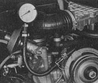

Fuel pressure in ring main too low at full throttle
Pull off
hose between intake air distributor and pressure regulator
Measure pressure in ring main with a pressure gauge
At idling speed (specified pressure 2.5 kg/cm2/35psi)
At full throttle (specified pressure 2.5 kg/cm2/35psi)

Pressure at idling and full throttle about 2.5 kg/cm2 (35 psi)
Pressure drops noticeably at full throttle
Pressure same at idling and full throttle but too low